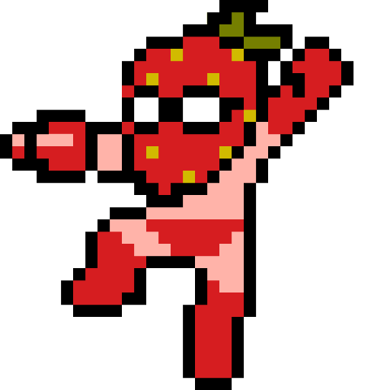
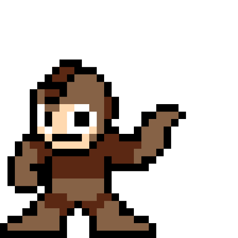
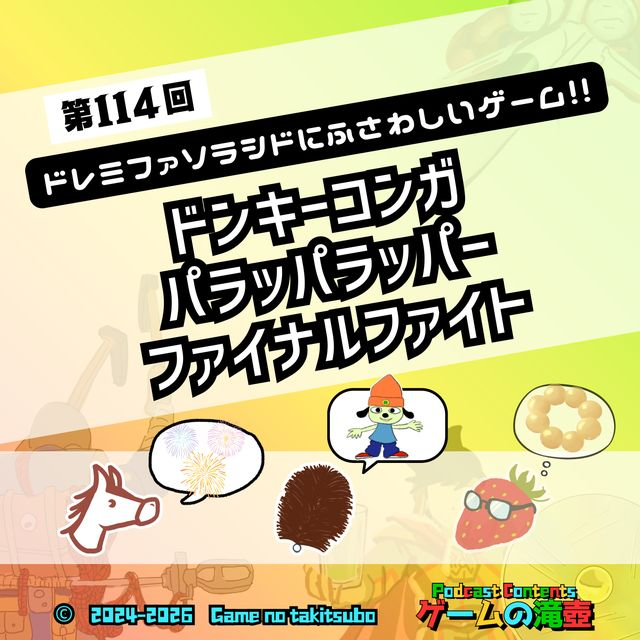

ポッドキャストってなに？
無料で聴けるネットラジオのようなものです。アプリを入れなくても、上のボタンからブラウザですぐ再生できます。通勤・家事・寝る前のおともにどうぞ。 くわしい聴き方はこちら →
無料で聴けるネットラジオのようなものです。アプリを入れなくても、上のボタンからブラウザですぐ再生できます。通勤・家事・寝る前のおともにどうぞ。 くわしい聴き方はこちら →

FUSAWASHII GAME SHINDAN あなたに"ふさわしいゲーム"を診断！ 全114回のトークデータ・1062タイトルの中から、運命の一本が見つかる。結果はシェアして自慢しよう。 診断する →
TAKITSUBO DATABASE 語られた全1062タイトル、ぜんぶ引ける。 メインで語った回・3分ゲーム紹介・ちょい出しまで、あなたの好きなあのゲームをどの回で話したかがわかる索引です。 索引を見る →LATEST最新エピソード

🎧 最新回ドンキーコンガ、パラッパラッパー、ファイナルファイト…今夜決定！ ドレミファソラシドにふさわしいゲーム！！ 音楽を聴いたことのあるすべての皆さん！！ それぞれの音階に対応するゲームは何なのか気になっていませんか？ ドレミファソラシドにふさわしいゲーム、すべて決めます！…RECENT最近の配信すべて見る →


SPECIAL SERIES名物企画一覧へ →


MEMBERSパーソナリティ
夜中たわしのブログ「夜中に前へ」では、ポッドキャストの更新情報も記事になっています。 YouTubeではゲーム実況も配信中！
NEWSお知らせ一覧へ →
OFFICIAL X公式X
最新情報・配信告知・こぼれ話は公式Xで。
感想は #ゲームの滝壺 でポストしていただければ、すべて読んでいます！